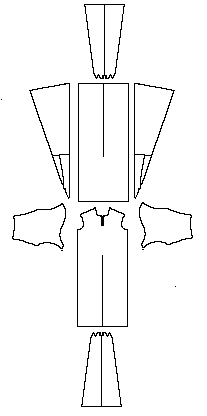

Pattern drawing based on Hald in NockertMaterial is a three-shaft twill wool.
Go to Tunic Page; Moselund Site Page or Proceed
Some Clothing of the Middle Ages - Tunics - Moselund, by I. Marc Carlson, Copyright 1996 This code is given for the free exchange of information, provided the Author's Name is included in all future revisions, and no money change hands-